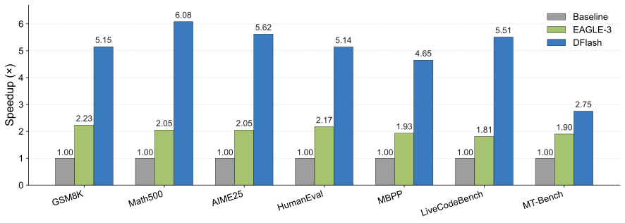
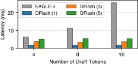
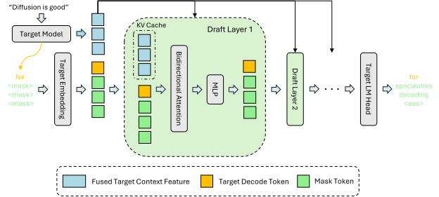
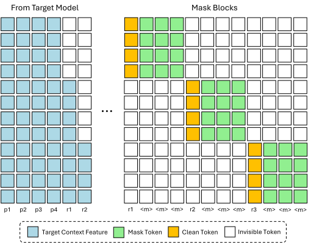
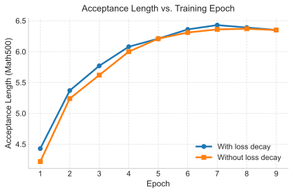

用块扩散模型当草稿器：DFlash 的高速投机解码
DFlash: Block Diffusion for Flash Speculative Decoding
GitHub star 为 2026-10-19 的快照。阅读状态、进度与收藏只保存在你的浏览器里。
逐节精读
这部分按论文的章节顺序，用本站自己的话把整篇论文从头讲一遍。读懂某个概念需要的背景知识，会在第一次用到它之前单独讲清楚（青色框）。每个结论都尽量说出“因为什么、所以什么”。标“推算”的数字是本站根据论文数据算出来的，不是论文原话。本页以 arXiv v2（2026-05-28，ICML 2026 定稿版）为底本；v2 比 v1 多了长上下文实验、KV 注入与输入融合的对照，以及附录里更多模型和 vLLM 的结果。论文以 CC BY 4.0 许可发布，所以本页直接放了原文的 5 张图（未做修改），其余示意图由本站绘制。每节末尾有英文原文的链接。
0 导读：这篇论文解决什么问题
大语言模型生成文字是一个词一个词来的：每生成一个词，都要把整个模型从头到尾算一遍。在只服务一个用户的时候，这一遍计算的大部分时间并不花在算术上，而是花在把几十 GB 的参数从显存搬到计算单元上，GPU 的算力大半闲着。投机解码利用的就是这些闲着的算力：先让一个便宜的小模型（草稿器）猜出后面几个词，再让大模型（目标模型）用一次前向把这几个词一起检查一遍。猜对的部分直接收下，所以一次大模型前向就能产出好几个词；而检查的规则保证最终输出和大模型自己一个个生成的结果完全一样，所以这种加速是“无损”的。
问题在于草稿器本身。目前最强的投机解码方法 EAGLE-3，它的草稿器也是一个词一个词地猜的：猜 8 个词就要跑 8 次。为了让这 8 次足够便宜，草稿器只能做得极小（EAGLE-3 只有 1 层 Transformer），而这么小的网络猜不了太远，猜到第三四个词往往就错了。结果是，实际加速大多停在两三倍。
DFlash 的做法是把草稿器换成一个块扩散模型：它一次前向就把后面一整块（16 个位置）同时填满，所以起草的时间几乎不随要猜的词数增长，草稿器也就可以做到 5 层。为了让这样一个小模型猜得准，DFlash 不让它从零开始想，而是把目标模型在 5 个不同深度上的隐状态取出来，融合后作为额外的键和值（K/V）注入草稿器的每一层。在 Qwen3-8B 上、贪心解码时，DFlash 在 7 个数学、代码和对话测试上平均快 4.86 倍（同条件下 EAGLE-3 为 1.76–2.02 倍），最好的 MATH-500 上达到 6.08 倍；放进推理引擎 SGLang、用单张 B200 服务时，并发 1 时快 5.1 倍，并发升到 32 时降到 2.8 倍。论文发表后，DFlash 被合入了 vLLM、SGLang、TensorRT-LLM 和 llama.cpp。
读完这部分，你应该能回答这几个问题：
- 投机解码的加速比由哪几个量决定？为什么自回归草稿器会卡在两三倍？
- 扩散草稿器“一次前向出一整块”为什么几乎不随块大小变慢？代价是什么？
- 目标模型的特征是怎么进入草稿器的？“注入每一层的 K/V”比“在输入处拼接”好在哪里？
- 训练时为什么要围绕随机锚点构造掩码块，为什么块里靠前的位置损失权重更大？
- “无损”在什么条件下成立？和 EAGLE-3 的比较匹配了哪些条件，没匹配哪些？
- 为什么并发越高，加速越小？在什么情况下优势会缩到很小？
1 引言：投机解码为什么卡在两三倍，扩散模型能补上什么
目标模型每生成一个词都要做一次完整的前向计算。只服务一个请求时，这次计算的时间几乎都花在读参数上：一个 80 亿参数的模型在 BF16 下有约 16 GB 参数，每一步都要从显存完整读一遍，而真正的乘加运算只占很小一部分（为什么会这样，vLLM 精读页第 1 节用批处理的例子讲过）。这带来一个重要推论：让目标模型一次前向处理 16 个位置，耗时和处理 1 个位置差不多，因为参数只需要读一遍。
投机解码就建立在这个推论上。每一轮分两步：
- 起草。一个便宜的草稿器根据已有的文字，猜出后面 \(\gamma\) 个词。
- 验证。目标模型把“最后一个已确认的词 + 这 \(\gamma\) 个猜测”一起做一次前向。因为注意力是因果的，它在每个位置上算出的，正是“假如前面的猜测都对，下一个词应该是什么”。贪心解码时，从第一个猜测开始逐个比对：只要猜测等于目标模型在该位置的选择，就收下；遇到第一个不一致的位置就停，并且直接采用目标模型在这个位置给出的词（它在这次前向里已经算好了，不花额外时间）。这个“白送”的词常被叫作奖励词（bonus token）。
举个例子：上文是“今天的天气”，草稿器猜了 4 个词“非常 / 好 / ， / 适合”。目标模型这次前向给出的选择依次是“非常 / 好 / 。/ …”。前两个一致，收下；第三个不一致，于是用目标模型的“。”。这一轮一共定稿 3 个词，而目标模型只做了一次前向。一轮最少定稿 1 个词（第一个猜测就错），最多定稿 \(\gamma+1\) 个词（全部猜对，再加上最后一个位置之后的奖励词）。每轮平均定稿的词数叫接受长度，论文记作 \(\tau\)，它包含奖励词。
为什么说是“无损”？贪心解码时，每个被收下的词都等于目标模型自己会选的词，所以最终输出与目标模型逐词贪心生成的结果完全相同。按温度采样时，规则换成投机采样：以 \(\min(1,p(x)/q(x))\) 的概率接受草稿词 \(x\)（\(p\)、\(q\) 分别是目标和草稿的分布），被拒时从“\(p\) 减去 \(q\) 后剩下的部分”重新采样；可以证明这样得到的每个词都恰好服从目标模型的分布。详细推导见投机解码精读页 §2.3。
本批次讨论的扩散语言模型大多是掩码扩散：训练时随机把一部分词换成一个特殊的掩码符号 [M]，让模型根据剩下没被遮住的词，把被遮住的词猜回来；生成时从一整段 [M] 出发，每一步同时预测所有 [M] 位置，挑一部分填上，重复若干步直到填满。因为一步就能预测很多位置，它天生是并行的。
代价也来自同一个地方：同一步里被同时填上的几个词，是各自独立地选出来的，彼此“看不见”。如果一次填太多，就可能出现每个词单看都合理、连在一起却不通顺的情况。所以要保证质量，往往要分很多步慢慢填，并行的速度优势就被步数吃掉了。块扩散（BD3-LM）是一个折中：把序列切成若干块，块与块之间像自回归模型一样从左到右生成（前面的块可以用 KV 缓存），块内部用扩散并行填。详细内容见本批次的 Block Diffusion 精读页和 MDLM 精读页；扩散语言模型的整体框架见旧版“从头讲起”页。
有了这两块背景，就能看清论文提出的矛盾。一方面，主流的投机解码方法（以 EAGLE-3 为代表）都是自回归起草：草稿器自己也是一个词一个词地猜，猜 \(\gamma\) 个词就要串行跑 \(\gamma\) 次。这种串行起草不仅本身慢，而且草稿器每一步都以自己前面的猜测为条件，越往后偏得越远。论文认为，正是这两点把实际加速压在了约 2–3 倍。
另一方面，扩散语言模型能并行生成，正好绕开了串行这一步。但论文指出，现有开源扩散模型的生成质量普遍不如同规模的自回归模型，而且为了保证质量需要很多步去噪，原始速度并不快。于是出现一个很自然的组合：让扩散模型只负责快速起草，让高质量的自回归模型负责验证。验证规则保证了最终输出完全等于自回归模型的输出，扩散模型的质量问题就不会传到用户那里，它只会影响猜中的比例。
这个组合之前已经有人试过，但效果有限。DiffuSpec 和 SpecDiff-2 直接拿 70 亿参数级别的预训练扩散模型当草稿器：草稿质量不错、接受长度也长，但这么大的草稿器本身占显存、起草也慢，实际加速只有 3–4 倍。PARD 走了另一个方向：训练很小的自回归模型去模仿扩散式的并行生成，可小模型的能力不够，接受长度上不去，加速上限约 3 倍。看起来，草稿器要么大而准、要么小而不准，似乎没有“免费的午餐”。
论文的回答是一句话：目标模型最懂行（the target knows best）。Samragh 等人（2025）观察到，大的自回归模型在某个位置的隐状态里，其实隐含了不止下一个词、而是后面好几个词的信息。既然如此，就不必让一个小草稿器从零开始推理，而是把目标模型已经算好的隐状态交给它，让它只负责把这些信息“读出来”、一次并行地写成一整块词。用论文的话说，草稿器变成了挂在目标模型上的一个“扩散适配器”：推理能力来自目标模型，并行速度来自小小的扩散草稿器。

- 摘要里的“超过 6 倍”是单个测试集上的最好成绩（MATH-500 上 Qwen3-4B 为 6.09 倍、Qwen3-8B 为 6.08 倍）。7 个测试的平均是 4.91 倍（Qwen3-4B）和 4.86 倍（Qwen3-8B），换成温度 1 采样时约 4.0–4.2 倍。
- “比 EAGLE-3 快 2.5 倍”取决于和哪一档 EAGLE-3 比。按表 1 的平均值推算，对树大小 60 约为 2.4 倍，对树大小 16 约为 2.7–2.8 倍；而在训练数据完全对齐的 LLaMA-3.1 对比（§5.5.1）里，差距缩小到 1.2–1.4 倍（见第 8 节）。
- 图 1 和表 1 都是在 Transformers 里、每次只处理一个请求时测的。放进 SGLang、vLLM 并提高并发后，加速会变小（第 7 节）。
2 相关工作：三条线索在这里汇合
最早的投机解码用一个同家族的小模型当草稿器（比如用 T5-small 给 T5-XXL 起草）。EAGLE 的改进是：草稿器不再只看文字，而是直接读取目标模型顶层算出的隐状态（特征），再配上当前词的嵌入，通过一个极小的网络预测下一个词；然后把自己的输出接回去，继续预测再下一个，所以它仍是自回归的。EAGLE-2 加上了动态草稿树：每一步不只保留一个猜测，而是保留概率最高的若干个候选（top-\(k\)），展开成一棵树，最后挑出总概率最高的若干个节点（比如 16 个或 60 个），用一个特殊的注意力掩码让目标模型一次前向验证整棵树。EAGLE-3 又做了两件事：不再要求草稿器复现目标模型的特征，而是直接预测词；并把目标模型低、中、高三层的特征拼起来用。为了让草稿器习惯“吃自己的输出”，EAGLE-3 在训练时就把多步起草展开来模拟，这叫训练时测试（training-time test）。EAGLE-3 的草稿器只有 1 层 Transformer。更多细节见旧版 EAGLE 拆解页。
Medusa 走的是另一条路：不要独立的草稿模型，而是在目标模型顶上加几个额外的预测头，第 \(i\) 个头直接预测往后第 \(i\) 个位置的词，同样用树状注意力一次验证。
投机解码这条线。从 Leviathan 等人的原始方法，到 Medusa 的多头、EAGLE 系列利用目标模型的特征，草稿质量越来越好。但论文指出，这些方法的大多数仍然依赖自回归起草，串行的本质没有变，因此加速有限。
扩散语言模型这条线。LLaDA 第一次把掩码扩散语言模型做到了数十亿参数的规模（见 LLaDA 精读页）。但完全并行的扩散模型有两个工程上的麻烦：生成长度要事先固定，而且没法像自回归模型那样高效地复用 KV 缓存。块扩散用“块间自回归、块内扩散”同时解决了这两点。Fast-dLLM v2 和 SDAR 进一步把现成的自回归模型改造成块扩散模型（见旧版“自回归改块扩散”页）。即便如此，论文认为现有扩散模型整体上仍不如最好的自回归模型，而且往往需要很多步去噪，实际推理速度受限。
用扩散做投机解码这条线。这是和 DFlash 最直接相关的一组工作，下表按 DFlash 论文自己的描述把它们放在一起比较。
| 方法 | 草稿怎么产生 | 草稿器 | 用不用目标模型的内部特征 | 按 DFlash 论文的说法，卡在哪里 |
|---|---|---|---|---|
| 独立小模型（Leviathan 等） | 逐词自回归 | 同家族小模型 | 不用 | 串行起草；小模型猜不准 |
| Medusa | 多个预测头直接给出后几个位置 | 目标模型上加的头 | 用（最后一层） | （论文未专门评述） |
| EAGLE-1/2/3 | 逐词自回归，可展开成树 | EAGLE-3 为 1 层 | 用，只在输入处融合 | 串行；为控制延迟只能很浅，实际约 2–3 倍 |
| PARD | 小自回归模型模仿并行生成 | 小模型 | 不用 | 能力不足，接受长度短，约 3 倍封顶 |
| DiffuSpec、SpecDiff-2 | 预训练扩散模型并行起草 | 约 70 亿参数 | 不用 | 显存占用大、起草慢，实际 3–4 倍 |
| TiDAR | 同一模型里扩散“想”、自回归“说” | 目标模型本身联合训练 | — | 最终生成质量尚非无损 |
| Samragh 等（2025） | 给自回归模型加 LoRA，使其能并行起草 | 基座模型 + LoRA | 用基座自身 | （论文作为思想来源引用） |
| DFlash | 块扩散，一次前向出整块 | 5 层（Qwen3-8B 上约 10.5 亿参数） | 用，注入草稿器每一层的 K/V | 本页后面逐项讨论 |
把这张表横着看，DFlash 的定位就清楚了：它把“小草稿器”“借用目标模型的特征”“扩散式并行起草”“严格的投机验证”这四件事放到了一起。前两件来自 EAGLE 这条线，第三件来自扩散模型这条线，第四件保证了无损。TiDAR 在旧版拆解页里有详细介绍（旧版 TiDAR 一节）。
3 预备知识：加速比由什么决定，两种起草方式差在哪
3.1 加速比公式：每轮产出多少，每轮花多少
论文沿用 MagicDec（Sadhukhan 等，2025）的写法。设一轮里起草花的时间是 \(T_{\text{draft}}\)，目标模型验证花的时间是 \(T_{\text{verify}}\)，这一轮平均定稿 \(\tau\) 个词（\(1\le\tau\le\gamma+1\)，含奖励词），那么平均每个词的耗时 \(L\) 和相对自回归解码的加速比 \(\eta\) 是：
其中 \(L_{\text{target}}\) 是目标模型自回归生成一个词的耗时。右边那种写法更好理解：分子是“一轮产出几个词”，分母是“一轮相当于几个普通解码步”。想加速只有两条路：让分子变大（猜得更准、接受长度更长），或者让分母变小（起草更便宜）。在只服务一个请求时，验证 16 个位置和普通解码一步的耗时差不多，所以分母里能动的主要就是起草开销。
用表 1 的数字代进去，可以看出 DFlash 在两条路上同时赢了。以 Qwen3-8B、贪心解码、MATH-500 为例（推算）：
- DFlash：\(\tau=7.87\)，加速 6.08 倍，所以一轮约等于 \(7.87/6.08\approx1.29\) 个普通解码步。
- EAGLE-3（树大小 16）：\(\tau=3.02\)，加速 1.81 倍，一轮约 1.67 个解码步；树大小 60 时 \(\tau=3.49\)、加速 2.05 倍，一轮约 1.70 个解码步。
在全部 7 个测试上，DFlash 的一轮都在 1.26–1.32 个解码步之间（MT-Bench 例外，约 1.54），EAGLE-3 两档都在 1.66–1.74 之间（推算）。也就是说，DFlash 每一轮比 EAGLE-3 更便宜，同时每轮产出的词是 EAGLE-3 的约 1.9–2.2 倍（平均接受长度 6.49 对 3.40 和 2.96）。还有一个细节值得注意：EAGLE-3 验证 60 个节点和验证 16 个节点，一轮的代价几乎一样（都约 1.7 步），这正是“只服务一个请求时，验证多几个位置几乎免费”的直接体现。
3.2 自回归起草与扩散起草：起草开销怎么随猜测个数变化
自回归草稿器一次只能出一个词，猜 \(\gamma\) 个词就要跑 \(\gamma\) 次前向。设一次前向耗时 \(t_{\text{step}}\)，起草开销就是
它随 \(\gamma\) 线性增长。为了把延迟控制住，自回归草稿器只能做得极浅，EAGLE-3 就只有 1 层。浅带来的后果是能力有限：多猜几个词要多花时间，但接受长度很快就饱和，因为后面的词它根本猜不准。论文认为，这种“成本线性涨、收益早饱和”的不平衡，是自回归起草加速上不去的根本原因。
扩散草稿器把 \(\gamma\) 个位置放在同一次前向里一起算，起草开销是
为什么一次算 16 个位置和算 4 个位置差不多快？道理和前面“验证几乎免费”完全一样：只服务一个请求时，草稿器的一次前向主要花在读它自己的参数和启动 GPU 内核上，多几个位置只是多几行矩阵，参数还是只读一遍。所以论文说，在块不太大时，\(t_{\text{parallel}}\) 远小于 \(\gamma\cdot t_{\text{step}}\)，而且几乎不随 \(\gamma\) 变化。
这一点改变了草稿器的设计空间：既然起草开销不再随猜测个数增长，草稿器就可以做得更深、更有表达力，而不必付出成比例的延迟。论文的实测是：5 层的 DFlash 一次起草 16 个词，比 1 层的 EAGLE-3 起草 8 个词还快，接受长度也更长。

下面这个演示可以直观地看到自回归起草的天花板。左图的横轴是每轮猜的词数 \(\gamma\)，\(\alpha\) 是每个草稿词被接受的概率（假设各位置独立且相同），\(c\) 是草稿器一步相对目标模型一步的耗时。演示里的成本模型是 \(\gamma c+1\)，也就是自回归起草：草稿开销随 \(\gamma\) 线性增长，所以加速比曲线会在某个 \(\gamma\) 处到顶然后下降。把 \(c\) 调大一点就能看到，草稿器越“贵”，最优的 \(\gamma\) 越小、峰值越低，这正是 EAGLE-3 必须做得极浅的原因。
DFlash 改变的是成本模型本身：起草开销不再是 \(\gamma c\)，而是一个几乎与 \(\gamma\) 无关的常数（按上面的推算，Qwen3-8B 上一轮额外开销约 0.3 个解码步）。在这个前提下，\(\gamma\) 取到 15 也不吃亏。做一个粗略的验算：如果每个位置的接受概率约为 0.87，猜 15 个词时每轮期望定稿 \((1-0.87^{16})/(1-0.87)\approx6.9\) 个词，除以每轮约 1.3 个解码步，加速约 5.3 倍，和表 1 的量级一致（推算，独立同分布只是近似）。
4 方法（一）：推理时，草稿器怎么借用目标模型的“思考”

4.1 从目标模型里取什么
Transformer 的每一层都会给每个位置输出一个向量，叫这个位置在这一层的隐状态。最后一层的隐状态经过输出头（LM head，一个把向量映射到整个词表的线性层），变成“下一个词是什么”的概率分布。浅层的隐状态更多反映词本身和局部搭配，深层的更多反映语义和对后文的预测。
输出概率只回答一个问题：下一个词最可能是什么。而隐状态是模型内部的完整“工作记忆”，里面除了下一个词，还编码了长距离的依赖、任务相关的语义，以及——这是关键——对再往后几个词的预期。Samragh 等人（2025）的实验发现，自回归模型的隐状态确实隐含了多个未来词的信息。DFlash 正是要把这部分信息交给草稿器。
具体做法是：目标模型在处理提示词（预填充）和每次验证时，本来就要逐层计算隐状态。DFlash 从中均匀地挑出 5 层——从第 2 层到倒数第 3 层之间等间隔地取。以 36 层的 Qwen3-8B 为例，公开的草稿器配置文件里写的是第 1、9、17、25、33 层（从 0 开始编号）。这 5 层的隐状态在每个位置上拼接成一个长向量（Qwen3-8B 上是 \(5\times4096=20480\) 维），经过一个线性投影 \(W_c\) 压回草稿器的宽度，再做一次 RMSNorm 归一化，得到这个位置的目标上下文特征 \(\mathbf H_t\)：
这一步几乎没有额外计算：隐状态是目标模型本来就要算的，只是把它们导出来而已。新增的参数只有 \(W_c\)。附录 A.3 给了一个量级：对 Qwen3.5-35B-A3B（隐藏维度 \(D=2048\)），\(W_c\in\mathbb R^{D\times5D}\) 在 BF16 下约 42 MB，而目标模型本身约 70 GB；批大小 1、序列长 2048 时，投影的输入和输出激活分别约 40 MB 和 8 MB；块大小 16 解码时，临时激活不到 400 KB。
4.2 KV 注入：让每一层都直接看到目标特征
EAGLE-3 也用目标模型的特征，但它的用法是：把特征和词嵌入拼在一起，当作草稿器的输入。如果草稿器只有 1 层，这没什么问题；可一旦把草稿器加深，目标特征只在最底层进入一次，往上每过一层就被混合、稀释一次，越往上的层越难直接用到它。论文认为，这就是 EAGLE-3 式的草稿器加层数收益递减的原因。
DFlash 换了一种接法：把 \(\mathbf H_t\) 当作一段“持久的上下文”，直接放进草稿器每一层注意力的键（K）和值（V）里。设 \(\mathbf H_d\) 是草稿块各位置在第 \(i\) 层的输入，那么第 \(i\) 层注意力的查询、键、值是：
方括号表示沿序列方向拼接。读这个式子要抓住三点：
- 查询只来自草稿块。只有块里的位置需要被更新、需要输出预测；目标特征只作为“可以被查阅的资料”出现在键和值里。
- 同一份 \(\mathbf H_t\) 进入每一层，但每层用自己的投影 \(W_i^K\)、\(W_i^V\) 去读它。所以第 5 层看到的目标信息和第 1 层一样“新鲜”，不会被前面几层稀释。论文的消融（表 6）显示，草稿器从 3 层加到 8 层，MATH-500 上的接受长度从 5.64 一路涨到 6.33，说明深度确实被用上了。
- 上下文位置不经过查询、输出投影和前馈网络。它们在草稿器里只被投影成 K/V，不被逐层更新，所以很便宜。这些 K/V 存在草稿器自己的 KV 缓存里，跨轮复用：每一轮只需要把新确认的那几个词的特征追加进去。
4.3 一次前向填满一个块
草稿块的第一个位置叫锚点，放的是目标模型刚刚确认的那个词：第一轮是预填充后目标模型解码出的第一个词，之后每一轮都是上一轮验证给出的奖励词。锚点后面的 15 个位置全部放掩码符号 [M]。整个块（16 个位置）经过目标模型的嵌入层进入草稿器，做一次前向：块内各位置之间是双向注意力，每个位置还能看到 KV 缓存里所有上下文位置的目标特征。最后，每个 [M] 位置的输出经过目标模型的输出头变成词表上的分布，贪心解码时取概率最高的词，于是一次就得到 15 个草稿词。项目页明确写了，DFlash 只用一步去噪。
为什么一步就够？如果扩散模型是独立生成文字，一步填满 15 个位置会严重损害质量，因为这 15 个词是各自独立选出来的，彼此没有协调。但在投机解码里，草稿错了的代价只是“这一轮少收几个词”，错误永远不会进入最终输出。真正重要的是块里靠前的几个位置猜得准，因为接受是从第一个位置开始、遇错即停的。论文的结论部分也说，正是验证机制提供了质量保证，扩散模型才可以大胆地把去噪步数压到最少，把并行度用到最大。
这种“各位置独立地选词”也解释了 DFlash 的天花板：越往后的位置，越可能出现“单看合理、连起来不对”的情况，所以 16 个位置的块，平均只能接受 6–8 个词。表 9 的对照也印证了这一点：同样 5 层、同样 KV 注入、块大小 8 时，把草稿器改成逐词自回归起草，GSM8K 上的接受长度是 4.8，块扩散并行起草是 4.2，后者略低；但后者只跑一次前向，所以加速反而更高（3.3 倍对 2.4 倍）。
草稿器有多大？按 Hugging Face 上公开权重的元数据，Qwen3-8B 的草稿器有约 10.5 亿参数（5 层，每层宽度与目标模型相同，都是 4096），Qwen3-4B 的约 5.4 亿，Qwen3-Coder-30B-A3B 的约 4.7 亿（8 层、宽度 2048），LLaMA-3.1-8B 的约 10.5 亿（块大小 10）。这些数都不含嵌入层和输出头，因为它们直接借用目标模型的。作为对照，论文用的 EAGLE-3 基线（AngelSlim 发布的 Qwen3-8B 草稿器，1 层）权重文件约 0.8 GB，折合约 4 亿参数（推算）。
4.4 走一遍：一轮起草与验证
下面用原文图 2 的句子走一遍完整的流程。为了画得下，示意图用块大小 4（锚点 + 3 个掩码），实际是 16；第 3 个草稿词是本站为了演示“猜错”而改的。
- “轻量”是相对的。相对 70 亿参数的扩散草稿器，5 层确实很轻；但相对目标模型，Qwen3-8B 的草稿器约 10.5 亿参数，是目标模型（约 82 亿）的八分之一左右。此外草稿器每层都要为上下文存 K/V：它的 KV 头配置与 Qwen3-8B 相同（8 个 KV 头、每头 128 维），5 层对目标模型的 36 层，相当于每个词的 KV 缓存多出约 14%（推算）。论文附录 A.3 只讨论了 \(W_c\) 和激活的开销，没有讨论这一项；在高并发服务中，它会减少一张卡能同时容纳的请求数。
- 每个目标模型都要单独训练一个草稿器。草稿器读的是特定目标模型特定几层的隐状态，换一个目标模型就得重训。
- “一次前向”不等于“一定更快”。它省掉的是串行步数；当并发很高、GPU 已经被算满时，多算的位置同样要花时间。
5 方法（二）：训练配方——让训练时的情形和推理时一模一样

5.1 训练数据：用目标模型自己写的回答
论文从 NVIDIA Nemotron Post-Training Dataset V2 和 CodeAlpaca 里收集了约 80 万条提示词，但不用数据集里原来的回答，而是让目标模型自己重新生成回答。原因很直接：草稿器要预测的是这个目标模型接下来会说什么，而不是某个数据集里别人写的答案；用目标模型自己的输出训练，草稿器学到的就是目标模型的措辞和习惯，验证时被接受的比例自然更高。对开启思考模式的推理模型（第 6 节的表 2），草稿器则在带推理过程的目标模型输出上训练。
训练时，把“提示词 + 回答”这整段干净的序列送进冻结的目标模型做一次前向，就能拿到所有位置的目标特征，然后按图 4 的方式注入草稿器。附录 A.1 提到，这些特征可以每一步现算（在线训练），也可以预先算好存下来（离线训练），后者省计算，但存储量与抽取的层数成正比。
5.2 掩码块围绕随机锚点构造
标准的块扩散训练是把回答从头到尾切成固定的连续块，在每个块里随机遮住一部分位置，让模型把它们还原出来。这样训练出的模型，见过的往往是“块里有些词可见、有些被遮住”的情形。
可推理时 DFlash 面对的块永远是同一种样子：第一个位置是目标模型确认过的干净词（锚点），后面全是 [M]。于是 DFlash 改成：在回答里随机抽取若干位置作为锚点，每个锚点作为一个块的第一个位置，把它后面的“块大小 − 1”个位置全部遮住，训练草稿器一次并行地把它们预测出来。这样训练时的块和推理时的块完全同构。随机抽锚点还有一个附带的好处：同一条回答在不同轮次里会以不同的位置为锚点，草稿器因此见到更多样的上下文特征，相当于做了数据增广。
附录 A.5.2 的表 13 量化了这个改动（3 层草稿器、5 层目标特征、块大小 16、10 万条训练数据）：从标准构造换成随机锚点后，MATH-500 上的加速从 4.13 倍升到 4.69 倍（接受长度 4.94 → 5.64），HumanEval 从 3.29 倍升到 3.90 倍（3.86 → 4.61），MT-Bench 从 2.13 倍升到 2.38 倍（2.80 → 3.18）。
5.3 一条序列里同时训练很多块，长上下文也不贵
如果每个锚点块都单独做一次前向，训练会很慢。DFlash 把一条序列上所有锚点块拼成一个长序列，用图 4 那样的稀疏注意力掩码（块内双向、只看自己锚点之前的目标特征、块与块互不可见）一次前向、一次反向全部训练完，实现上用的是 PyTorch 的 Flex Attention。附录 A.1 给出的设置是：每条序列随机抽 512 个锚点，最大序列长度 3072（Qwen3-Coder 为 4096）。
这种做法顺带让长上下文训练变得便宜。论文对比的是 EAGLE-3：它的“训练时测试”要把多步起草在训练中展开模拟，序列越长、步数越多，代价越高。DFlash 则固定每条序列的块数，每个 epoch 重新随机抽锚点，所以训练成本有上界，同时又起到数据增广的作用。
5.4 损失加权：块里越靠前的位置越重要
在投机解码里，块里的词并不平等。接受是从第一个位置开始、遇错即停的：如果第 2 个位置猜错了，后面第 3 到第 16 个位置就算全猜对也没用。所以靠前位置的准确率，对接受长度的影响远大于靠后的位置。DFlash 把这种不对称直接写进了损失：块内第 \(k\) 个位置的交叉熵乘以一个指数衰减的权重
\(\gamma\) 控制衰减快慢，附录 A.1 给的取值是：块大小 16 时 \(\gamma=7\)，块大小 10 时 \(\gamma=5\)，块大小 8 时 \(\gamma=4\)。块大小 16 时，第 1 个位置权重为 1，第 8 个位置为 \(e^{-1}\approx0.37\)，第 15 个位置约为 0.14。论文没有说明 \(k\) 是从锚点数起还是从第一个掩码位置数起；不过两种数法只差一个整体的常数倍，各位置之间的相对比例是一样的。
一个帮助理解的角度（本站的解读，不是论文的说法）：如果每个位置被接受的概率都约为 0.87、彼此独立，那么“第 \(k\) 个位置有机会被用上”（前面全都猜对）的概率正好是 \(0.87^{k-1}=e^{-(k-1)/7}\)。也就是说，这个权重大致等于“这个位置的对错真正影响结果的概率”。按这个接受率，块大小 16 时每轮期望定稿约 6.9 个词，和表 1 里 6.5 左右的接受长度量级相当。

5.5 共享嵌入层与输出头，其余超参数
草稿器直接使用目标模型的词嵌入层和输出头，并且在训练中冻结它们，只训练中间的几层 Transformer。这样做有两个好处：可训练的参数少了很多；而且草稿器被迫在目标模型的表示空间里工作，它的输出向量要能被目标模型的输出头正确解读，这让它更像一个紧贴目标模型的“扩散适配器”。
其余训练设置（附录 A.1）：AdamW 优化器，学习率 \(6\times10^{-4}\)，梯度裁剪阈值 1.0，余弦学习率调度、前 4% 步数预热，共训练 6 个 epoch。草稿器 5 层（Qwen3-Coder 为 8 层），块大小 16（LLaMA-3.1 为 10）。
- 符号 \(\gamma\) 在论文里有两个意思。§3 的 \(\gamma\) 是每轮的草稿词数；式 (4) 的 \(\gamma\) 是损失衰减的速度（块 16 时取 7）。两者无关。
- 图 5 的收益主要在训练早期。按估读，训满 6 个 epoch 时有无衰减只差约 0.05 的接受长度。
- 训练成本论文没有报告。包括用目标模型重新生成 80 万条回答的开销，以及训练用的 GPU 时长。截至 2026-10-19，官方仓库 z-lab/dflash 只包含推理与评测代码；SGLang 团队的草稿器训练框架 SpecForge 在 2026-01 合入了 DFlash 的在线训练（PR #415），但它是否与论文配方逐项一致，本站没有核对。
6 实验（一）：实验设置，以及指令模型和推理模型上的主结果
6.1 实验设置
- 目标模型。Qwen3-4B、Qwen3-8B、Qwen3-Coder-30B-A3B-Instruct（混合专家模型，总参数 300 亿，每个词只激活约 30 亿）和 LLaMA-3.1-8B-Instruct；附录又补充了 Qwen3.5 系列、Qwen3-Coder-Next 和 GPT-OSS。
- 任务。数学：GSM8K、MATH-500、AIME25；代码：HumanEval、MBPP、LiveCodeBench；对话：MT-Bench、Alpaca。
- 指标。平均接受长度 \(\tau\)（含奖励词）和相对自回归解码的端到端解码加速比。
- 硬件。除特别说明外都在 NVIDIA H200 上；SGLang 实验在单张 B200 上。
- 基线。普通自回归解码，以及 EAGLE-3。Qwen3 上的 EAGLE-3 用的是腾讯 AngelSlim 发布的草稿器权重，LLaMA-3.1 上用的是 EAGLE-3 团队的官方权重。其他扩散草稿方法因为没有开源实现而没有比较。
- EAGLE-3 的两档设置。树大小 16：每轮验证 16 个位置，和 DFlash 块大小 16 的验证量相同，是“同等草稿预算”的公平对比；树大小 60：EAGLE-3 原论文用来追求最长接受长度的设置，验证开销更大。两档的起草步数都是 7、每步保留 top-10 候选，所以 EAGLE-3 每轮最多定稿 8 个词（7 个草稿 + 1 个奖励词，推算），DFlash 块大小 16 时最多 16 个。
论文正文只说是“端到端解码加速”。本站查看了论文发布时（2026-02-06）官方仓库里的评测脚本，口径如下：同一份 Transformers 代码里，分别以块大小 1（即普通自回归）和块大小 16 运行；每个样本只计解码阶段的“每个输出词的平均耗时”，不含处理提示词的预填充；对所有样本取平均后，两者相除得到加速比。每次只处理一个请求（批大小 1），装有 flash-attn 时注意力用 FlashAttention-2，最多生成 2048 个词。脚本里各测试集的样本数是：GSM8K、MATH-500、MBPP、LiveCodeBench 各 128 条，AIME 30 条，HumanEval 164 条，MT-Bench 80 条（这是脚本的设置，论文正文没有写）。
另外，本站核对发现，表 1 里“平均”一栏的加速比与 7 项的几何平均一致：例如 Qwen3-8B 的 DFlash，7 项的几何平均是 4.86，算术平均则是 4.99（推算）。接受长度的平均则是普通的算术平均。
6.2 指令模型（表 1）
下表摘录 Qwen3-8B 的结果（关闭思考模式，最多生成 2048 个词）。每格是“加速比 / 接受长度”，括号里是 EAGLE-3 的树大小或 DFlash 的块大小。
| 温度 | 方法 | GSM8K | MATH-500 | AIME25 | HumanEval | MBPP | LCB | MT-Bench | 平均 |
|---|---|---|---|---|---|---|---|---|---|
| 0 | EAGLE-3 (16) | 1.94× / 3.23 | 1.81× / 3.02 | 1.79× / 3.00 | 1.89× / 3.17 | 1.69× / 2.82 | 1.57× / 2.65 | 1.63× / 2.83 | 1.76× / 2.96 |
| EAGLE-3 (60) | 2.23× / 3.71 | 2.05× / 3.49 | 2.05× / 3.44 | 2.17× / 3.65 | 1.93× / 3.25 | 1.81× / 3.03 | 1.90× / 3.26 | 2.02× / 3.40 | |
| DFlash (16) | 5.15× / 6.54 | 6.08× / 7.87 | 5.62× / 7.08 | 5.14× / 6.50 | 4.65× / 5.95 | 5.51× / 7.27 | 2.75× / 4.24 | 4.86× / 6.49 | |
| 1 | EAGLE-3 (16) | 1.87× / 3.12 | 1.73× / 2.91 | 1.63× / 2.74 | 1.75× / 3.05 | 1.64× / 2.74 | 1.56× / 2.57 | 1.58× / 2.70 | 1.68× / 2.83 |
| EAGLE-3 (60) | 2.07× / 3.59 | 1.94× / 3.38 | 1.84× / 3.18 | 2.05× / 3.54 | 1.85× / 3.16 | 1.72× / 2.92 | 1.70× / 3.05 | 1.88× / 3.26 | |
| DFlash (16) | 4.67× / 5.98 | 4.84× / 6.40 | 3.57× / 4.73 | 4.32× / 5.52 | 4.04× / 5.21 | 4.93× / 6.69 | 2.47× / 3.80 | 4.03× / 5.48 |
Qwen3-4B 的情况几乎一样：贪心时 DFlash 平均 4.91 倍、接受长度 6.54，EAGLE-3 两档平均 1.81 倍和 2.08 倍；温度 1 时 DFlash 平均 4.24 倍、接受长度 5.69。从这两张表可以读出几件事：
- DFlash 在每一项上都赢，赢在两个方向。它的接受长度大约是 EAGLE-3 的两倍，而每轮的开销反而更低（§3.1 的推算）。值得一提的是，它只验证 16 个位置，接受长度就超过了验证 60 个位置的 EAGLE-3。
- 论文正文说的“比 EAGLE-3 (16) 快 2.4 倍”，数值上对应的其实是树大小 60。按两模型的平均值推算，DFlash 对树大小 60 是 2.4 倍（贪心）和 2.1–2.2 倍（温度 1），对树大小 16 是 2.7–2.8 倍和 2.4–2.5 倍。正文的标注应该是笔误，但两种读法下 DFlash 都明显领先。
- 采样比贪心难猜。温度 1 时，目标模型的下一个词本身是随机的，草稿器只能猜中它最可能的选择，所以接受长度下降，Qwen3-8B 的平均加速从 4.86 倍降到 4.03 倍。下降最多的是 AIME25（5.62 倍 → 3.57 倍）。
- 任务决定了上限。数学和代码的回答格式规整、可预测性强，加速在 4.6–6.1 倍；开放式对话 MT-Bench 最难猜，只有 2.75 倍（接受长度 4.24）。
6.3 推理模型（表 2）
开启思考模式后，模型会先输出一长段推理过程再给答案，生成时间往往是普通回答的数倍，所以加速对推理模型尤其有价值。这里的草稿器是在带推理过程的目标模型输出上单独训练的。
| 模型 | 温度 | GPQA | MATH-500 | AIME25 |
|---|---|---|---|---|
| Qwen3-4B | 0 | 4.23× / 5.23 | 4.59× / 5.74 | 4.39× / 5.54 |
| 1 | 3.67× / 4.55 | 3.93× / 4.89 | 3.64× / 4.68 | |
| Qwen3-8B | 0 | 4.17× / 5.17 | 4.64× / 5.82 | 4.51× / 5.74 |
| 1 | 3.75× / 4.65 | 4.03× / 5.06 | 3.70× / 4.69 |
贪心时加速约 4.2–4.6 倍，温度 1 时约 3.6–4.0 倍，论文概括为“约 4.5 倍和 3.9 倍”。接受长度比表 1 的同名任务略低（例如 Qwen3-8B 的 MATH-500：表 1 为 7.87，这里为 5.82），说明自由书写的推理过程比直接作答更难预测。
7 实验（二）：放进推理引擎以后，并发越高收益越小
7.1 SGLang 上的吞吐（表 3）
实验在单张 B200 上进行，注意力后端是 FlashAttention-4（Blackwell 架构的版本，见旧版 FlashAttention-4 页），并开启了 SGLang 第二版投机解码的“调度重叠”（Spec-v2 scheduling overlap），论文说这是为了尽量提高吞吐。并发数从 1 到 32，指标是每秒输出的词数。按论文发布时仓库里的 SGLang 评测脚本：温度为 0，最多生成 2048 个词，每档并发发送“128 × 并发数”条请求（上限 1024），先丢掉一批预热，吞吐 = 全部输出词数 ÷ 总墙钟时间，所以它包含了预填充和排队。
| 目标模型 · 任务 | 并发 1 | 4 | 8 | 16 | 32 | 平均 \(\tau\) | |
|---|---|---|---|---|---|---|---|
| Qwen3-8B · MATH-500 | 基线（词/秒） | 230 | 861 | 1666 | 3133 | 5694 | – |
| DFlash（词/秒） | 1175 | 3884 | 7485 | 12268 | 16076 | 8.01 | |
| 加速 | 5.1× | 4.5× | 4.5× | 3.9× | 2.8× | ||
| Qwen3-8B · HumanEval | 加速 | 4.2× | 3.6× | 3.6× | 3.0× | 2.4× | 6.50 |
| Qwen3-4B · MATH-500 | 加速 | 4.8× | 4.3× | 4.1× | 3.5× | 2.9× | 8.01 |
| Qwen3-4B · HumanEval | 加速 | 4.0× | 3.6× | 3.2× | 2.7× | 2.2× | 6.63 |
| Qwen3-Coder-30B-A3B · HumanEval | 加速 | 3.5× | 3.0× | 3.2× | 3.2× | 3.1× | 8.09 |
| Qwen3-Coder-30B-A3B · LCB | 加速 | 2.6× | 2.4× | 2.3× | 2.4× | 2.3× | 6.42 |
| Qwen3-Coder-30B-A3B · MBPP | 加速 | 3.2× | 3.0× | 3.2× | 3.3× | 3.1× | 7.23 |
换算成每个请求的速度更直观（推算）：Qwen3-8B 做 MATH-500 时，并发 1 下基线每秒 230 个词，DFlash 每秒 1175 个；并发 32 下平均到每个请求，基线约 178 词/秒，DFlash 约 502 词/秒。也就是说，在 32 个用户同时使用时，DFlash 仍然让每个用户看到快将近 3 倍的输出。
7.2 为什么并发越高，加速越小
GPU 一次前向的耗时由两个上限中较慢的那个决定：从显存读数据的速度，和做乘加运算的速度。对一个稠密模型，一次前向无论处理多少个位置，参数都只读一遍（BF16 下每个参数 2 字节），而每个位置要对每个参数做约 2 次浮点运算。所以“每读 1 字节参数能做多少次运算”大约就等于这次前向一起处理的位置数。
按 NVIDIA 公布的 B200 峰值（BF16 稠密约 2.25 PFLOPS，显存带宽约 8 TB/s），两条上限的交点大约在每字节 280 次运算（推算）。换句话说：一次前向处理的位置数少于约 280 个时，耗时主要由读参数决定，多加几个位置几乎免费；超过这个数之后，耗时开始随位置数成比例增长。这个估算忽略了注意力和 KV 缓存的读取，只用来判断量级。下面的演示可以自己试：把模型选成 Llama-3-8B（和 Qwen3-8B 规模相近），GPU 选 B200，把 batch 设成“并发数 × 16”，看工作点落在哪一侧。
用这个框架看表 3：自回归基线在并发 \(c\) 时，每次前向处理 \(c\) 个位置；DFlash 的验证每次处理 \(16c\) 个位置。并发 1 时是 16 个位置，远在交点左侧，验证几乎免费；并发 16 时是 256 个，已经接近交点；并发 32 时是 512 个，验证进入算力受限区，多验证的那些位置（其中很多最后会被拒掉）开始实打实地占用算力。按 Qwen3-8B 做 MATH-500 的数字推算，一轮折合的普通解码步数从并发 1 时的约 \(8.01/5.1\approx1.6\) 涨到并发 32 时的约 \(8.01/2.8\approx2.9\)（假设接受长度不随并发变化，论文只给了平均值）。
另一个角度是基线自己也在受益于并发。从并发 1 到 32，请求数多了 32 倍，Qwen3-8B 基线的吞吐涨了 24.8 倍（230 → 5694），几乎是白捡的；DFlash 只涨了 13.7 倍（1175 → 16076），因为它在低并发时已经把闲着的算力用掉了一大块（推算）。投机解码本质上是“用闲置的算力换延迟”，闲置算力越少，能换的就越少。
论文自己也指出了这一点（§5.5.4）：在大批量、算力受限的场景下，大块会增加验证开销，这时把块调小可能更划算；而用块大小 16 训练的草稿器可以直接在推理时改用块大小 8（表 8）。按负载自适应地调整块大小，论文留作了未来工作。
为什么 Qwen3-Coder-30B-A3B 的加速几乎不随并发变化？论文没有解释，下面是本站的推测。这是一个混合专家模型，每个词只经过少数几个专家。只服务一个请求时，普通解码每步只需读被选中的那几个专家；可验证 16 个位置时，不同位置会路由到不同的专家，要读的参数多了很多，所以验证在并发 1 时就不是免费的，加速只有 3.5 倍（尽管接受长度高达 8.09）。并发升高后，基线每步同样要读越来越多的专家，两边的开销一起涨，比值就比较平。表 3 里的数字与这个推测一致：Coder 的基线吞吐从并发 1 到 32 只涨了 11.8 倍（229 → 2713），远低于稠密的 Qwen3-8B 的 24.8 倍（推算）。附录表 11 里混合专家模型的加速普遍低于同代的稠密模型，也与此相符。
7.3 更多模型与 vLLM（附录 A.4）
表 11在 SGLang、单张 B200、并发 8 下测了更多模型，每格是“接受长度 / 加速”。对于自带多词预测模块（MTP）的 Qwen3.5 系列，论文拿 DFlash 和原生 MTP 做了对比：
| 目标模型 | 方法 | MATH-500 | HumanEval | MT-Bench |
|---|---|---|---|---|
| Qwen3.5-4B | MTP | 6.5 / 1.5× | 6.3 / 1.6× | 5.3 / 1.3× |
| DFlash | 7.1 / 3.0× | 7.3 / 2.9× | 5.6 / 2.3× | |
| Qwen3.5-9B | MTP | 6.7 / 1.7× | 6.6 / 1.7× | 5.3 / 1.3× |
| DFlash | 7.3 / 3.5× | 7.9 / 3.4× | 5.5 / 2.5× | |
| Qwen3.5-35B-A3B | MTP | 6.9 / 1.7× | 7.1 / 1.6× | 5.2 / 1.2× |
| DFlash | 7.2 / 2.4× | 7.9 / 2.3× | 5.4 / 1.7× | |
| Qwen3.5-27B | DFlash | 7.7 / 3.8× | 9.1 / 3.9× | 5.5 / 2.5× |
| Qwen3-Coder-Next | DFlash | 6.0 / 1.9× | 7.2 / 1.9× | 3.9 / 1.2× |
| GPT-OSS-20B | DFlash | 5.1 / 2.2× | 4.3 / 2.2× | 4.2 / 2.0× |
| GPT-OSS-120B | DFlash | 5.4 / 1.6× | 4.4 / 1.7× | 3.7 / 1.3× |
最值得注意的是 MTP 那几行：MTP 的接受长度和 DFlash 相差不大（例如 Qwen3.5-9B 的 MATH-500，6.7 对 7.3），加速却只有一半（1.7 倍对 3.5 倍）。接受长度接近而加速差一倍，说明差距主要在每轮的起草开销上，这正是 §3 的论点。不过论文没有交代 MTP 的起草步数等设置，所以这组对比的公平性无法完全核对。
表 12是在 vLLM 上测的 Qwen3.5-9B，每格是 DFlash 的吞吐（词/秒）和相对自回归的加速：并发 1 时 MATH-500、HumanEval、MT-Bench 分别是 849（4.0 倍）、969（4.6 倍）、627（3.0 倍）；并发 8 时 3.2、3.4、2.2 倍；并发 16 时 2.5、2.7、1.7 倍；并发 32 时 9836（1.9 倍）、10258（2.1 倍）、6787（1.3 倍）。和 SGLang 上的趋势相同：低并发收益大，高并发仍有收益但明显缩小，对话类任务缩得最多。
8 实验（三）：长上下文、消融，以及这些数字的份量
8.1 长上下文（表 4）
基础的草稿器是在 4K 长度的上下文上训练的。论文拿 Qwen3.5-27B 的草稿器，在 LongBench 的三个数据集上测了不同上下文长度下的接受长度。基础版在 4K 以内表现稳定，超过 4K 后明显下滑：hotpotqa 从 4.91（4K）降到 3.61（16K），gov_report 从 4.53（1K）一路降到 2.09（32K）。用 LongAlign-10K 中的 1600 条样本微调 3 个 epoch 后，长上下文版本不但不降，反而随上下文变长而上升：hotpotqa 在 16K 时达到 6.05，qasper 在 16K 时为 6.00，gov_report 在 32K 时保持在 3.56。论文据此认为，目标特征在长上下文下依然有代表性，草稿器只需要很少的额外训练就能学会更长程的模式。
需要注意，表 4 只报告了接受长度，没有报告加速。长上下文下每次验证都要读很长的 KV 缓存，验证本身变贵，同样的接受长度换来的加速会更小；这部分论文没有测。
8.2 训练数据相同时，再和 EAGLE-3 比一次（表 5）
表 1 的 EAGLE-3 草稿器是第三方（AngelSlim）训练的，训练数据和 DFlash 不同。表 5 补上了一个更干净的对比：目标模型是 LLaMA-3.1-8B-Instruct，DFlash 用和 EAGLE-3 完全相同的训练数据（UltraChat 和 ShareGPT）训练，和 EAGLE-3 团队的官方权重比较。测试在 SGLang 上进行（FlashInfer 后端、单张 B200），而且两边都用第一版投机解码（Spec-v1，不开调度重叠），因为第二版不支持 EAGLE-3 的树状起草。DFlash 用块大小 10，EAGLE-3 用 7 步起草、top-10，树大小 10 或 60。
| 任务 | 方法 | 并发 1 | 4 | 8 | 16 | 32 | 平均 \(\tau\) |
|---|---|---|---|---|---|---|---|
| GSM8K | EAGLE-3 (10) | 1.6× | 1.5× | 1.4× | 1.2× | 1.0× | 3.49 |
| EAGLE-3 (60) | 1.9× | 1.6× | 1.3× | 0.9× | 0.6× | 4.55 | |
| DFlash (10) | 2.4× | 2.2× | 2.1× | 1.8× | 1.6× | 4.32 | |
| HumanEval | EAGLE-3 (10) | 2.0× | 1.9× | 1.8× | 1.5× | 1.2× | 3.62 |
| EAGLE-3 (60) | 2.0× | 1.7× | 1.3× | 0.9× | 0.6× | 4.65 | |
| DFlash (10) | 2.8× | 2.6× | 2.5× | 2.1× | 1.8× | 4.91 | |
| Alpaca | EAGLE-3 (10) | 1.5× | 1.4× | 1.4× | 1.1× | 0.9× | 3.11 |
| EAGLE-3 (60) | 1.8× | 1.5× | 1.2× | 0.8× | 0.5× | 4.07 | |
| DFlash (10) | 2.2× | 2.0× | 1.8× | 1.5× | 1.4× | 3.73 |
这张表比表 1 更说明问题，读法有三点：
- 数据对齐以后，差距小了很多。并发 1 时，DFlash 相对两档 EAGLE-3 中较快的那一档是 1.2–1.4 倍（GSM8K 2.4 对 1.9，HumanEval 2.8 对 2.0，Alpaca 2.2 对 1.8，推算），而不是表 1 里的 2.4–2.8 倍。
- 接受长度差不多，赢在开销。DFlash 的接受长度在 HumanEval 上高于 EAGLE-3（60），在 GSM8K 和 Alpaca 上反而略低（4.32 对 4.55、3.73 对 4.07）。它更快，是因为起草只要一次前向、验证只要 10 个位置。
- 并发越高，DFlash 的相对优势越大。EAGLE-3（60）每个请求要验证 60 个位置，并发 32 时一次前向就是 1920 个位置，远远越过了算力交点，结果比不用投机解码还慢，只有自回归速度的 0.5–0.6 倍。EAGLE-3（10）和 DFlash（10）每次验证的位置数相同（并发 32 时都是 320 个），DFlash 仍然是 1.6 倍对 1.0 倍，差别来自更便宜的起草和更长的接受长度。
8.3 草稿器几层、目标特征取几层、块多大（表 6–8）
以下消融都只用 10 万条训练数据（完整配方的八分之一），在单张 H200 上贪心解码测得。论文没有写这几张表用的目标模型；只有表 9 注明是 Qwen3-4B。
草稿层数（表 6，块大小 16、5 层目标特征）。3 层、5 层、8 层的接受长度在 MATH-500 上依次是 5.64、5.99、6.33，HumanEval 上是 4.61、4.94、5.29，MT-Bench 上是 3.18、3.37、3.50，随深度稳定增长，这说明 KV 注入确实让更深的草稿器用得上目标特征。但加速几乎持平：MATH-500 上依次是 4.69、4.71、4.64 倍，HumanEval 上是 3.90、3.96、3.96 倍，MT-Bench 上是 2.38、2.35、2.23 倍。层数多了猜得更准，但每轮起草也更贵，两者几乎抵消。论文据此选择 5 层作为平衡点，也说明最优层数取决于部署环境。
目标特征层数（表 7，3 层草稿器、块大小 16）。从 3 层特征加到 5 层特征，MATH-500 从 4.49 倍 / 5.38 升到 4.69 倍 / 5.64，HumanEval 从 3.80 倍 / 4.47 升到 3.90 倍 / 4.61，MT-Bench 从 2.32 倍 / 3.07 升到 2.38 倍 / 3.18。代价是离线训练时要缓存的特征量随层数线性增长。
训练与推理的块大小（表 8，8 层草稿器、5 层特征）。
| 训练块大小 | 推理块大小 | MATH-500 | HumanEval | MT-Bench |
|---|---|---|---|---|
| 16 | 16 | 4.64× / 6.33 | 3.96× / 5.29 | 2.23× / 3.50 |
| 16 | 8 | 3.87× / 5.09 | 3.39× / 4.44 | 2.12× / 3.18 |
| 8 | 16 | 3.78× / 5.02 | 3.24× / 4.28 | 2.09× / 3.09 |
| 8 | 8 | 3.97× / 5.21 | 3.53× / 4.61 | 2.22× / 3.29 |
训练和推理块大小一致时，块 16 在数学和代码上的接受长度明显更高。论文在 MATH-500 上看了接受长度的分布：块 8 的模型有 35.7% 的轮次整块被全部接受，说明 8 个位置经常“不够用”；块 16 的分布更分散、平均更长。跨块大小时有明显的不对称：用块 16 训练、推理时改用块 8，接受长度（5.09）接近直接用块 8 训练的模型（5.21）；反过来用块 8 训练、推理时用块 16 则不行。实际意义是：训练时用大块，部署时可以按负载灵活缩小块。
8.4 KV 注入还是输入融合，要不要目标特征（表 9、表 10）
表 9是对“KV 注入”这个核心设计最直接的检验：目标模型 Qwen3-4B，草稿器统一 5 层、块大小 8，分别在自回归起草和块扩散起草两种方式下，比较“只在输入层融合目标特征”（EAGLE-3 的做法）和“注入每层 K/V”（DFlash 的做法）。每格是“接受长度 / 加速”。
| 起草方式 | 特征怎么进入 | GSM8K | HumanEval | MT-Bench |
|---|---|---|---|---|
| 自回归（逐词） | 输入融合（EAGLE-3-5L） | 4.2 / 2.1× | 4.3 / 2.2× | 3.1 / 1.4× |
| KV 注入（DFlash-AR） | 4.8 / 2.4× | 4.6 / 2.3× | 3.4 / 1.5× | |
| 块扩散（一次前向） | 输入融合 | 3.5 / 2.9× | 3.5 / 2.9× | 2.6 / 2.0× |
| KV 注入（DFlash） | 4.2 / 3.3× | 4.0 / 3.2× | 3.0 / 2.2× |
两种起草方式下，KV 注入都比输入融合有更长的接受长度，说明“让每层直接看到目标特征”这个设计本身就有效，不依赖于扩散。再横着比：同样用 KV 注入，自回归起草的接受长度（GSM8K 4.8）比块扩散（4.2）还高，这是因为自回归起草每个词都能看到前面的草稿词，而块扩散是各位置独立选词；但块扩散只跑一次前向，加速反而高得多（3.3 倍对 2.4 倍）。论文的总结是：DFlash 的准度来自 KV 注入，速度来自并行起草，两者缺一不可。
表 10回答“完全不给目标特征会怎样”：一个 5 层块扩散草稿器，不接任何目标特征（项目页说明目标模型是 Qwen3-4B）。贪心时 GSM8K、MATH-500、AIME24、AIME25 上分别是 2.83、3.73、3.43、3.35 倍（接受长度 3.38、4.61、4.12、4.07）；温度 1 时是 2.76、3.31、2.66、2.65 倍。对照表 1 里接了目标特征的 Qwen3-4B（GSM8K 5.15 倍 / 6.53，MATH-500 6.09 倍 / 7.84），目标特征让接受长度和加速都提高了约 60–90%（推算）。这就是“目标模型最懂行”的直接证据。
8.5 结果的份量
把前面的数字放在一起，下面逐条说明它们各自在什么条件下成立、匹配了什么、没匹配什么。
- “无损”成立，但前提是精确验证。本站核对了官方代码。贪心解码时，草稿词只有在等于目标模型在该位置的最大概率词时才被接受，奖励词也取目标模型的最大概率词，所以输出与目标模型逐词贪心生成的结果在数学上完全相同。温度 1 时，论文发布时（2026-02）的代码是：草稿器取自己最可能的词，目标模型在每个位置按自己的分布采样一个词，二者相同才接受，第一处不同就采用目标模型采样出的词；每个输出词都是从目标分布里采出来的，所以输出分布与目标模型完全一致（这等价于草稿分布退化为单点时的标准投机采样）。截至 2026-10-19 的现行代码改用了标准的“以 \(\min(1,p/q)\) 接受、被拒则从残差分布重采样”规则，同样无损。也正因为如此，论文没有报告任何任务准确率，所有数字都只关于速度。
- “完全相同”是数学上的，不是逐比特的。验证时 16 个位置一起算，和逐词解码时一个位置一个位置地算，GPU 内核的形状不同，浮点结果可能在最后几位有差异；当两个词的概率几乎相等时，最大概率词可能因此翻转。这是所有投机解码实现共有的现象，并非 DFlash 特有，论文也没有讨论（相关背景见旧版“批不变性”页）。
- 和 EAGLE-3 的对比，匹配了什么、没匹配什么。表 1 匹配了目标模型、硬件、实现框架、最大生成长度，以及树大小 16 这一档的验证预算；没有匹配的是：草稿器大小（DFlash 约 10.5 亿参数，EAGLE-3 约 4 亿，推算）、训练数据（DFlash 用目标模型重新生成的 80 万条回答，AngelSlim 的 EAGLE-3 权重是第三方训练的，数据论文未说明），论文也没有写 EAGLE-3 用的是哪份实现。表 5 匹配了训练数据并用了官方权重，是最干净的对比，那里的差距是 1.2–1.4 倍（并发 1），而不是标题里的 2.5 倍。
- 加速强烈依赖并发。表 1、表 2 全是批大小 1。到了 SGLang 和 vLLM 上，并发从 1 升到 32，Qwen3-8B 的 MATH-500 从 5.1 倍降到 2.8 倍，vLLM 上 Qwen3.5-9B 的 MT-Bench 从 3.0 倍降到 1.3 倍。所有报告的情形在并发 32 时都还有收益，但更高的并发没有测；EAGLE-3（60）的例子说明，验证预算过大时，高并发下投机解码可以比不用还慢。
- 测的是什么时间。表 1、表 2 的加速比是解码阶段每个词的平均耗时之比，不含预填充，基线是同一份 Transformers 代码里的逐词解码；SGLang 和 vLLM 的数字是包含预填充和排队在内的总输出吞吐。论文没有报告首词延迟（TTFT）和每个请求延迟的分布。引擎实验按脚本都是温度 0。
- 平均数怎么算。表 1 的平均加速比与几何平均一致（推算），比算术平均略低，这对 DFlash 是偏保守的口径。“超过 6 倍”只在 MATH-500 上成立。
- 没有算进去的成本。草稿器的权重（Qwen3-8B 上约 2.1 GB，推算）和它自己的 KV 缓存（约为目标模型的 14%，推算）都占显存，会减少高并发时一张卡能容纳的请求数；每个目标模型都要单独训练草稿器，并先用目标模型生成 80 万条回答，这些成本论文都没有报告。
- 任务与场景。数学和代码是最有利的场景（格式规整、可预测、输出长），开放式对话最弱；长上下文需要额外微调（表 4），而且只报告了接受长度。
英文原文 §5.4 ↗ · §5.5 ↗ · 附录 A.2 ↗ · 附录 A.5 ↗
9 结论：扩散模型不必和自回归模型正面竞争
论文的结论分两层。第一层是方法本身：把扩散模型限制在起草这一个环节，既用上了它天生的并行性，又避开了它单独生成时的质量问题；再让扩散草稿器以目标模型丰富的上下文特征为条件，接受率就能做得很高，从而把投机解码的速度推到了此前方法之上。
第二层是对扩散语言模型的重新定位。与其训练巨大的扩散模型去和自回归模型比拼端到端的生成质量，不如把扩散模型做成轻量、专门的草稿器，只负责又快又准地预测一个块。在这个角色里，扩散模型最大的弱点（少步数时质量下降）变得无关紧要，因为投机验证从原理上保证了输出质量，于是可以把去噪步数压到一步，把并行度用到极致。
把这一点放回本批次的其他论文里看会更清楚。像 Fast-dLLM 那样让扩散模型自己用置信度阈值并行解码，并行得越激进，质量损失越真实，需要在速度和质量之间权衡；而在 DFlash 的框架里，并行带来的错误只会变成“少收几个词”，永远不会出现在输出里。代价是它必须依附于一个现成的自回归模型，本身并不是一个独立的生成模型。
后来怎么样了
DFlash 的代码仓库创建于 2026-01-04，比 arXiv 首版（2026-02-05）还早一个月。之后它被各大推理引擎陆续合入，以下日期都来自各项目在 GitHub 上已合并的拉取请求（PR）：
- 训练：SGLang 团队的草稿器训练框架 SpecForge 于 2026-01-11 合入 DFlash 在线训练（PR #415）。
- vLLM：“[Feat][Spec Decode] DFlash”（PR #36847）于 2026-03-30 合入。
- SGLang：DFlash 投机解码支持（PR #22077）于 2026-04-07 合入；第二版投机解码（Spec V2）下的 DFlash 支持（PR #23000）于 2026-06-11 合入。论文 v1（2026-02）的 SGLang 实验早于这两次合入：当时项目页的安装命令指向 SGLang 的 PR #16818（2026-01-09 开启），这个 PR 后来没有合入就关闭了。
- TensorRT-LLM：DFlash 支持（PR #12794）于 2026-04-27 合入。
- llama.cpp：DFlash 支持（PR #22105）于 2026-06-28 合入。
- 草稿器权重：截至 2026-10-19，官方 Hugging Face 集合覆盖 Qwen3、Qwen3.5、Qwen3.6、Gemma 4、GPT-OSS、LLaMA-3.1、Kimi、MiniMax、GLM 等多个模型家族，远多于论文里测试的几个。
DFlash 2。2026-08-18，Inco AI 的博客发布了 DFlash 2（官方仓库的 README 链接了这篇博客，博客称 DFlash 出自其团队）。它针对的正是本页 §4.3 提到的弱点：DFlash 每个位置独立取最可能的词，块内缺乏协调，越往后的位置越不准。DFlash 2 加了两样东西：一是保留每个位置的前 16 个候选，用一个很小的打分器给相邻候选两两打分，选出一条连贯的路径；二是在草稿器每个注意力和前馈子层的前后，各加一个只混合“当前位置与前一个位置”的两抽头局部卷积，补强块内相邻词之间的依赖。博客报告，在 Qwen3-4B、GSM8K、温度 0 下，仅路径选择一项就把接受长度从 4.27 提高到 4.61。相应的支持已合入 SGLang（PR #35371，2026-08-19）、vLLM（PR #52816，2026-08-21）和 llama.cpp（PR #27342，2026-08-27）。博客里还列举了若干厂商采用 DFlash 的说法，本站没有逐项核实。
DDTree。Ringel 和 Romano 的 “Accelerating Speculative Decoding with Block Diffusion Draft Trees”（arXiv 2604.12989）指出 DFlash 每轮只验证一条草稿轨迹，于是直接利用 DFlash 在各位置给出的分布，在固定节点预算下用最佳优先搜索构造一棵草稿树，再用只允许看祖先节点的注意力掩码一次验证整棵树。本站的理解是：它把 EAGLE-2 的“草稿树”思路嫁接到了扩散草稿器上。
在本站可以接着读：
- Block Diffusion（BD3-LM）精读：DFlash 草稿器所用的“块间自回归、块内扩散”结构的来源。
- 投机解码精读：接受规则、无损性证明和最优草稿长度的推导。
- Fast-dLLM 精读：另一条路线，让扩散模型自己并行解码并配上 KV 缓存。
- Mercury 精读：商业化的扩散语言模型，独立生成而非当草稿器。
- 旧版“扩散与自回归混合”页：把 TiDAR、Nemotron-Labs-Diffusion 和 DFlash 放在一起对照。
作者
单位按论文署名。背景只列可公开查证的信息：作者主页、实验室与机构页面。
影响力
- 引用：见页首（Semantic Scholar 快照）。
- 发表：ICML 2026（PMLR 306），OpenReview 上标注为 ICML 2026 regular。arXiv v1 于 2026-02-05 发布，v2（定稿版）于 2026-05-28 发布。
- 开源：代码 z-lab/dflash 有 6,181 个 star、438 个 fork（截至 2026-10-19），MIT 许可，可通过
pip install dflash安装；草稿器权重在 Hugging Face 的 z-lab/dflash 集合中，同为 MIT 许可。 - 工程采用：已合入 vLLM、SGLang、TensorRT-LLM 和 llama.cpp 的主线（日期与 PR 编号见“后来怎么样了”）；后续版本 DFlash 2 也已合入 SGLang、vLLM 和 llama.cpp。
延伸阅读
- 相关精读：EAGLE、TiDAR
- 本批次扩散语言模型的其他精读页：D3PM · Diffusion-LM · SEDD · MDLM · Discrete Flow Matching · LLaDA · Dream 7B · LLaDA2.0 · Block Diffusion · Fast-dLLM · d1 · Train for the Worst, Plan for the Best · MMaDA · Mercury
- 背景：投机解码 · vLLM（KV 缓存与批处理） · FlashAttention · DeepSeek-V3（混合专家与 MTP）
- 旧版拆解页：DFlash 一节 · TiDAR 一节 · 块扩散 · 自回归改块扩散 · EAGLE 1/2/3 · 投机解码（AI Infra）
- 返回论文书架
本页是对论文的中文精读笔记，正文为本站撰写，并非翻译。数字与结论以原文为准：arXiv:2602.06036（v2）。原文图 1–5 取自论文 arXiv 版本，按 CC BY 4.0 许可使用，未做修改，版权归原作者（Jian Chen、Yesheng Liang、Zhijian Liu）。其余示意图与重画的图表由本站绘制。标“推算”的数字为本站根据论文数据、公开权重元数据或官方代码估算；对评测口径的说明来自论文发布时官方仓库（z-lab/dflash）中的评测脚本。